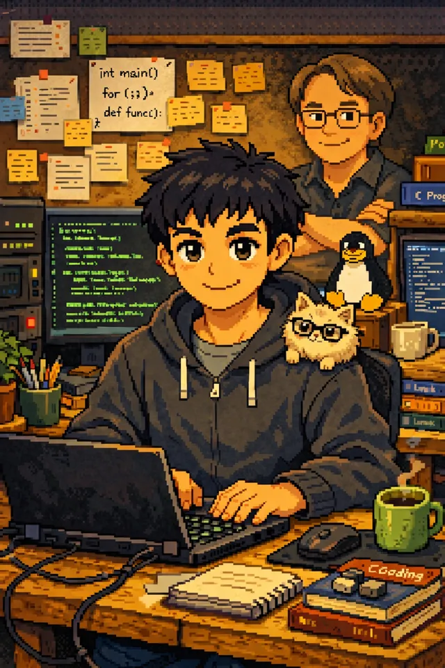

Hola, soy Manuel Graya — DevOps & Ingeniero Informático
Proyectos
Web Psicóloga
Web para una consulta de psicología: presencia online, captación de clientes y gestión de citas. En producción con Django y Nginx.
Landing manuelgraya
Esta misma web: HTML estático y Tailwind, con microbackend Python para el contacto. Deploy con git push a un servidor propio con Nginx.
Lista RRPP Bot
Bot de Telegram para que los RRPP de una discoteca gestionen sus listas de invitados, con envío automático del PDF consolidado por correo.
Sobre Mí
Las matemáticas, la resolución de problemas y el conectar con las personas siempre han sido mis fuertes. La informática me ganó al descubrir que aquí no existen límites: el escenario perfecto para desatar mi creatividad y aplicar soluciones que impacten de verdad.
Empecé en 2020 y poco después dejé Windows por el software libre: el Open Source me demostró de lo que es capaz la humanidad con un propósito común. Hoy vivo en primera línea la revolución de la IA, con la aspiración de convertirme en un gran experto y seguir construyendo el futuro.

Contacto
> mail --to manuelgraya
> ¿Un proyecto? ¿Una duda?
> ¿Una idea?
> Escríbeme y te respondo.
-
code GitHubarrow_forward
-
person_add LinkedInarrow_forward
-
photo_camera Instagramarrow_forward
- alternate_email manuel.ingraya@gmail.com